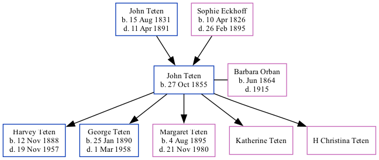

John J Teten 1855 -
[ Home ] | [ Surnames Index ] | [ Family History ]The child of John Teten and Sophie Eckhoff, , John was the great-great-grandfather of Stephanie Hardesty (née Teten), was born in Ostfriesland Germany on Oct 27, 18551,2,3,4,5 and married Barbara Orban (with whom he had 5 children: Harvey Henry, George Carl, Margaret, Katherine Elizabeth and H Christina) on Apr 24, 18841 (1900 census information 3/3 children).
During his life, he was living in Nebraska City Ward 4, Otoe, Nebraska in 19001 and in 19102; in Nebraska Ward 4, Otoe, Nebraska in 19203; and in Nebraska City, Otoe, Nebraska in 19304. He arrived in New York on Jun 1, 1867 (age: 7 6/12.) (age: 7 6/12.).He traveled from Bremen, Germany.
Parents
- John Henry was born on Aug 15, 1831
- Sophie Catherine was born on Apr 10, 1826
Children
- Harvey Henry was born on Nov 12, 1888
- George Carl was born on Jan 25, 1890
- Margaret was born on Aug 4, 1895
- Katherine Elizabeth
Citations
- 1900 United States Federal Census Ancestry.com Operations Inc (Age: 40; Marital Status: Married; Relation to Head of House: Head)
- 1910 United States Federal Census Ancestry.com Operations Inc (Age in 1910: 52; Marital Status: Married; Relation to Head of House: Head)
- 1920 United States Federal Census Ancestry.com Operations Inc (Age: 63; Marital Status: Widowed; Marital Status: Widow; Relation to Head of House: Head)
- 1930 United States Federal Census Ancestry.com Operations Inc (Age: 74; Marital Status: Widowed; Relation to Head of House: Father)
- New York, Passenger Lists, 1820-1957 Ancestry.com Operations, Inc.
Family Tree
Data (GEDCOM) maintained by Jay Weston Hannah, Omaha, Nebraska, USA.
Website generated by ged2site. Last updated on Jun 18, 2024.